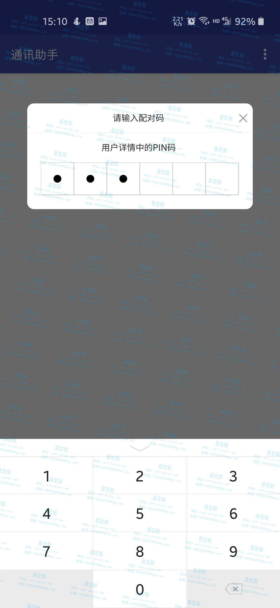
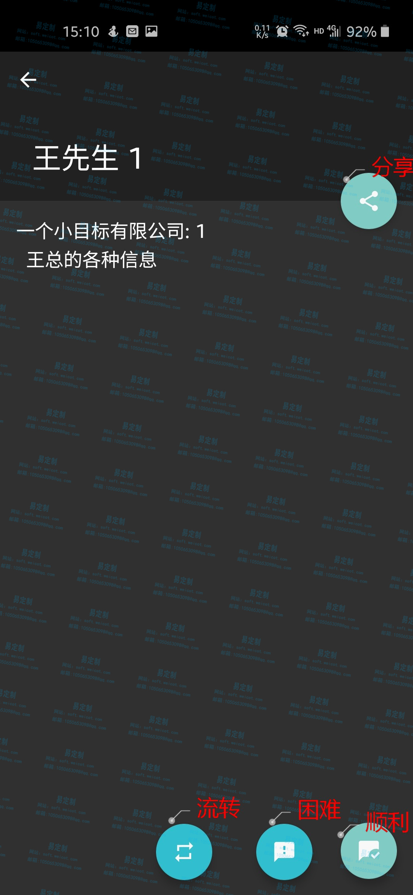
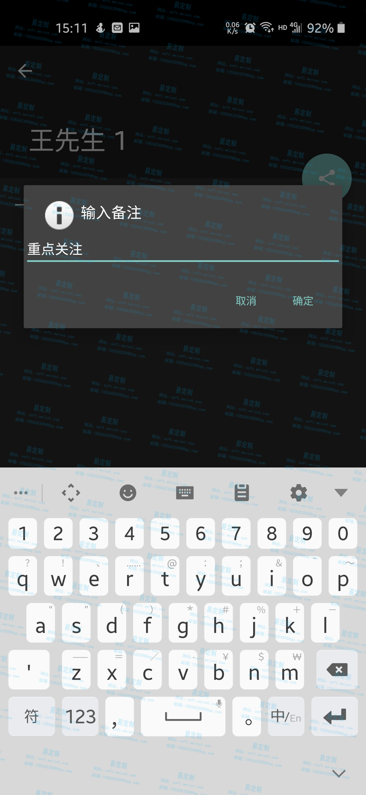
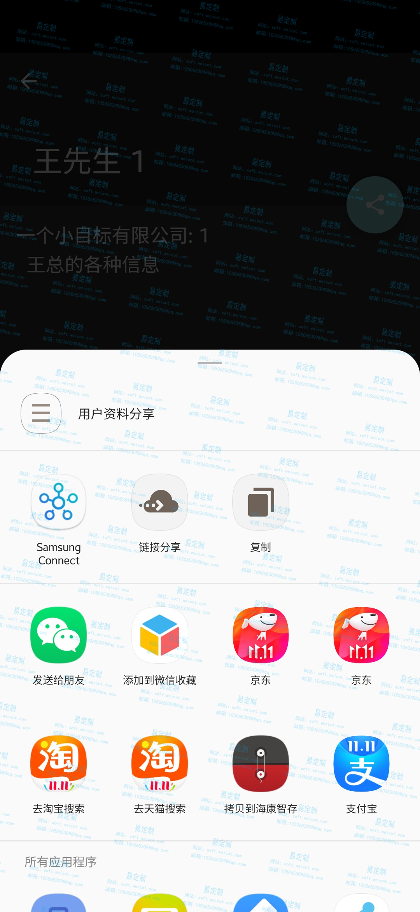
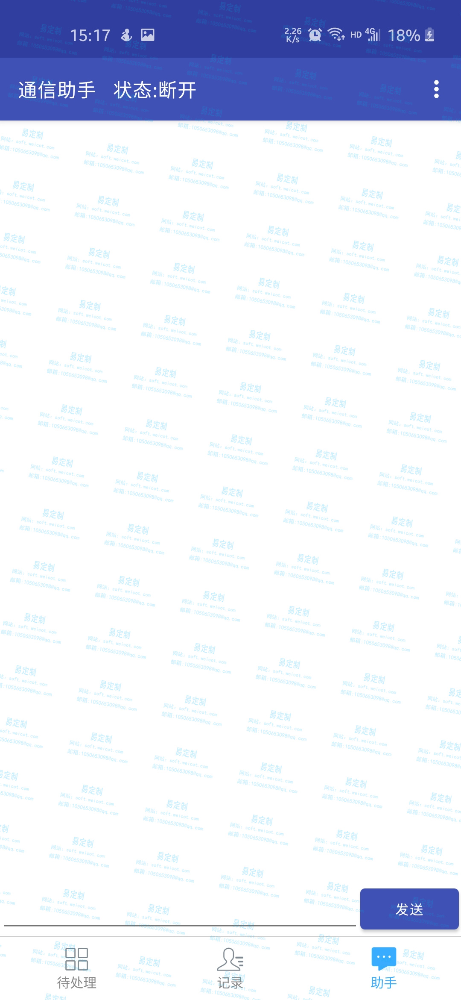
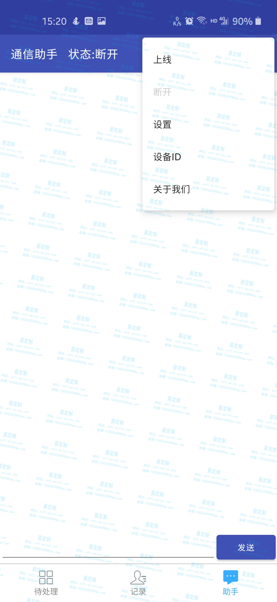
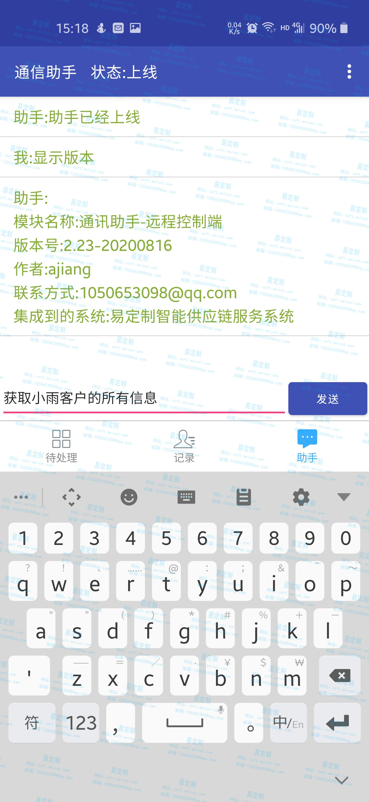
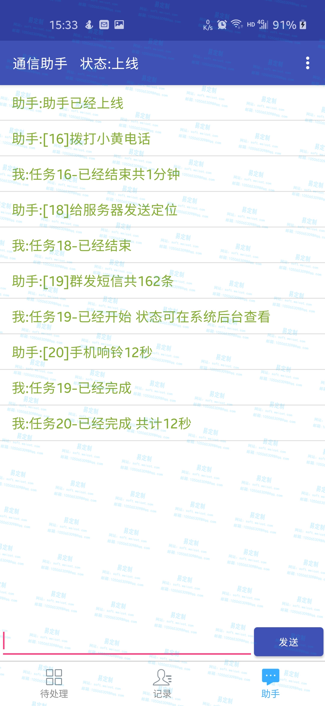
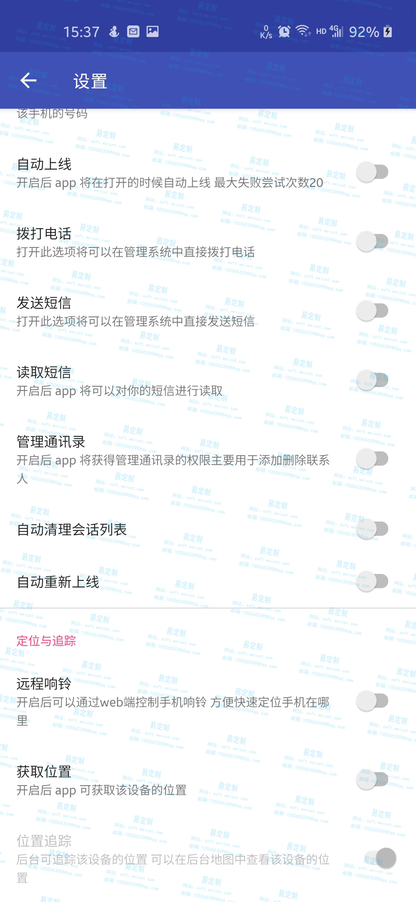
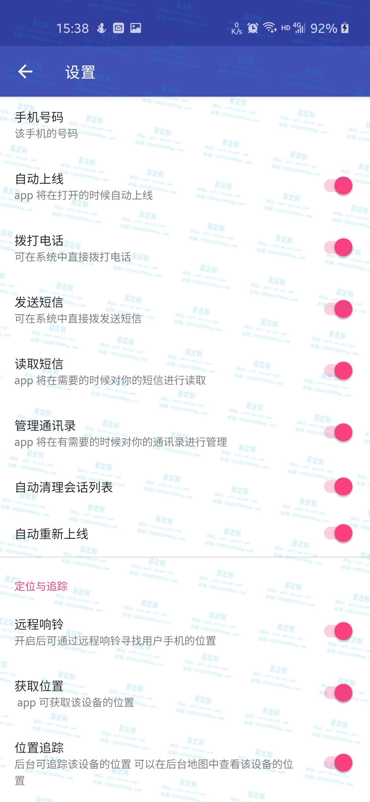

安卓通讯助手 以及控制模块
支持的服务 二开 部署 集成和定制化开发 可集成到其他系统中
安卓apk 的功能
- 获取待处理客户号码列表
- 拨打/顾客电话
- 记录拨打时间
- 批量添加到通讯录
- 查看客户详情
- 支持远程模块 拨打电话 添加删除通讯录 获取短信 获取位置
- 支持远程录音
- 群发短信
- 记录拨打电话时长
- 记录通话内容(部分手机可实现)
web 端助手模块
- 远程发送短信
- 远程拨打电话
- 远程添加删除通讯录
- 远程获取短信
- 远程获取位置
- 远程获取发送状态
- 远程拨手机状态
- 远程远程录音
- 定时获取状态
- 远程挂机
- 远程响铃
- 远程管理通讯录
功能界面
登入-首页
为了防止客户信息泄露 打开app 需要到web端获取配对码 输入即可和业务员进行绑定

这是待处理(需要开拓)的客户列表
点击上面那个三个点即可获取选项 点击关于我们即可获得软件版本
列表功能
列表操作
头像过去第一个图标是查看详情 第二个图标是拨打电话（后台将会实时获取你手机的通话状态）
左滑会出现删除 点击即可删除
查看详情
这几个按钮 分享是点击分享，流转是抛出到公海给其他人，困难表示遇到了困难，顺利表示有机会



文字交互控制台
如果你没有设置自动上线的 的需要选择手动上线


这个界面会显示 由服务器下发的任务以及执行情况 当然你也可以通过手动输入指令进行查询或者执行


配置与设置
提供的可配置选项如图
 